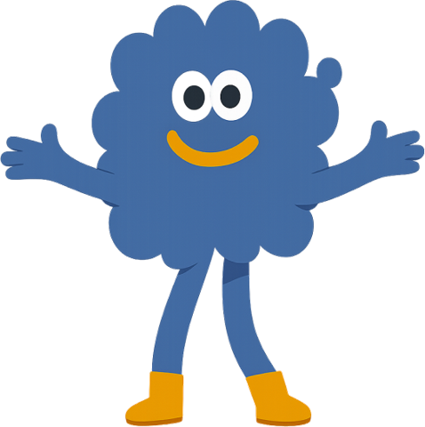
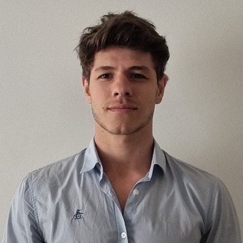
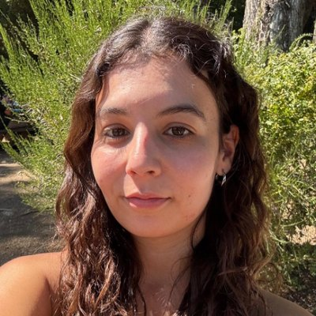
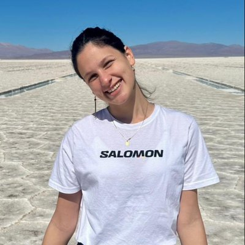
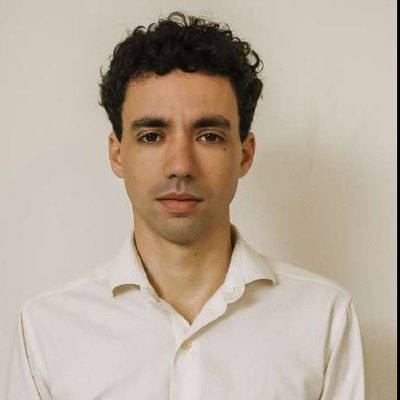
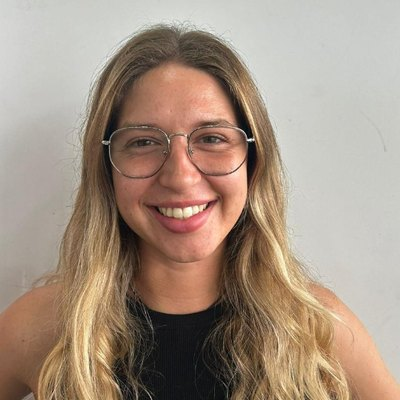
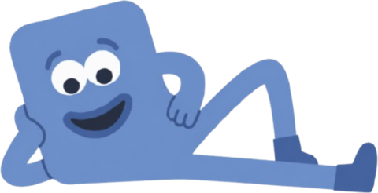
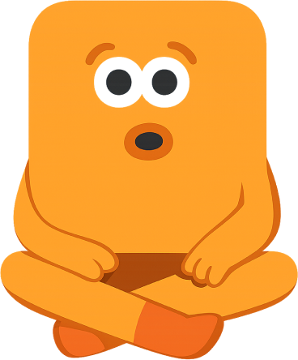

Un vehículo que crece con el niño
Rooda es un triciclo evolutivo para niños de 3 a 6 años: se transforma de modo sentado a modo de pie y se pliega para la vida en la ciudad.

Entre los 3 y los 6 años, los vehículos infantiles quedan chicos muy rápido
Las familias suman triciclos, patacletas, monopatines y bicicletas que acompañan una sola etapa. Cada reemplazo es un gasto, ocupa lugar en viviendas chicas y termina como descarte.
Crecimiento heterogéneo
Entre los 3 y los 6 años cambian las proporciones del cuerpo y el centro de gravedad. Niños de la misma edad tienen habilidades motrices muy distintas.
Vida útil corta
La mayoría de los productos responde a un rango etario fijo y deja de servir cuando el niño adquiere nuevas habilidades.
Ciudad con poco espacio
Guardarlos y trasladarlos en departamentos, ascensores y baúles es incómodo, lo que limita su uso cotidiano.
Una sola respuesta para tres necesidades
Adaptabilidad al crecimiento
Asiento en riel, manubrio regulable, pedales extensibles y dos modos de uso acompañan los cambios del cuerpo y de las habilidades.
Portabilidad
Una bisagra con traba reduce el largo de 965 a 610 mm para guardarlo en casa, en el ascensor o en el baúl.
Vida útil extendida
Componentes estándar y piezas de contacto reemplazables permiten pasarlo entre hermanos o revenderlo.
El producto en uso
El equipo

MARSICO, Mariano
Modelado 3D y renders
OLIVETO, Taiel
Gestión y organización

PORTNOI, Daira
Comunicación

ILARDO, Renata
Comunicación

MORENO, Ignacio
Desarrollo técnico

BEZUS, Victoria
Investigación
Niños de 3 a 6 años y los adultos que deciden por ellos
El niño es el usuario directo, pero los adultos compran, arman, validan el uso y garantizan la seguridad. El diseño equilibra autonomía para el niño, confianza para el cuidador y vida útil para la familia.
Núcleo
Tocá cada anillo para ver quién participa y qué define.
El producto no se define solo por lo que es, sino por dónde y cómo se usa
La plaza está a 300 – 500 metros
En CABA, el Plan Urbano Ambiental (Ley 2930) incorpora el paradigma de la ciudad de los 15 minutos, y el programa Buenos Aires Verde fija que nadie debería estar a más de 500 metros de su plaza. Ese recorrido equivale a 4 – 7 minutos caminando a paso tranquilo con un niño: el producto tiene que poder ir y volver de la plaza, y guardarse al llegar.
Caminando con un niño: ≈ 6 min
Mové la edad y mirá cómo cambia el ajuste
Estatura según los Patrones de Crecimiento de la OMS (2006) y la Referencia OMS 2007. Entrepierna = 38 a 42 % de la estatura; asiento–pedal = 88 a 95 % de la entrepierna; manubrio de pie = 52 a 60 % de la estatura. Valores estimados.
24 requisitos y su estado de cumplimiento
Cada requisito del programa se vincula con la solución de diseño que lo resuelve y con su estado actual.
Del pata-pata transformable a un vehículo de dos instancias
Según la teoría del apego, los adultos funcionan como una base segura desde la cual el niño explora, enfrenta nuevos desafíos y desarrolla su autonomía. Esa idea guió la exploración clase a clase.
De los primeros bocetos al producto definido
Tres intentos hasta llegar a la cadena
Cardán
Evitaba cadenas expuestas, pero el accionamiento independiente podía generar pérdida de continuidad y bloqueos al pedalear.
Biela y palanca
Ambas ruedas traseras vinculadas a un solo accionamiento: según el punto de empuje, invertía el giro y producía movimientos oscilantes.
Cadena y piñón
El plato delantero transmite el movimiento al piñón del eje trasero: transmisión continua, eficiente y con componentes estándar.
Tres caminos antes de la definición
Integración mediante carcasas
Carcasas de ABS que cubren mecanismos y estructura: estética más limpia, partes móviles protegidas y percepción de producto robusto.
Identidad visual lúdica
Colores vibrantes y de alto contraste para captar la atención del niño y generar un vínculo emocional con el producto.
Simplificación estructural
Tubos de sección cuadrada con curvas y articulación del asiento solo sobre el eje horizontal, sin regulación de altura.
Madera, plástico o chapa
Qué cambió después del receso invernal
Sección de los caños estructurales
Interferencia con la corona
Mantenimiento de la transmisión
Unión entre perfiles principales
Refuerzo del asiento
Pedales y ruedas
Un vehículo evolutivo que acompaña el desarrollo motriz
En una primera etapa, el modo sentado da estabilidad y apoyo. Cuando el niño desarrolla nuevas habilidades, el producto se transforma en un vehículo de conducción de pie, que exige más equilibrio, autonomía y control.
Tres hallazgos que guiaron el diseño
1 · Lógica diferencial del equilibrio en el giro
2 · Percepción multisensorial del movimiento infantil
3 · Evolución asimétrica de la forma corporal
Tocá cada punto para conocer los mecanismos
Rooda: de “rueda”, con una segunda “o” más amigable
El isotipo es un conjunto de ruedas que representa la adaptabilidad. Así como una rueda permite avanzar, el proyecto propone un sistema que evoluciona junto al usuario.

Roco
Estabilidad, confianza y protección: el rol del adulto como garante de un uso seguro.

Torqui
Curiosidad, exploración y juego libre: aprender a través del movimiento.
Rodi
El lado lúdico de la movilidad: emoción, energía y disfrute.
Paleta cromática
De sentado a de pie en menos de 2 minutos
De una tecnología simple a un producto resistente y escalable
La estructura se resuelve con caños cilíndricos de aluminio plegados y soldados, un proceso accesible y replicable que no depende de una infraestructura compleja.
Aluminio 6061-T6
Límite elástico 276 MPa · resistencia 310 MPa · densidad 2,70 g/cm³
Plegado de caño
Una pieza continua define la geometría con menos cortes y uniones.
Soldadura TIG
Uniones precisas y resistentes con mínima deformación térmica.
Pintura en polvo
Recubrimiento uniforme, resistente al desgaste y a la intemperie.
Doce pasos, cinco dispositivos
Operación Control Almacenamiento
20 componentes, 12 de ellos comerciales
| Pieza | Cant. | Material | Proceso | Origen |
|---|
Costo de fabricación ≈ USD 104 – 171 por unidad
Serie de 1.000 unidades. Pasá el cursor por cada tramo para ver el rubro.
Costo de fabricación
USD 104 – 171
Precio de venta estimado
USD 230 – 375
Referencia de mercado
USD 230 – 380
Valores orientativos: factor de 2,2 entre costo y precio. Actualizar con cotizaciones reales.
6 unidades por pallet
Caja de cartón corrugado doble onda de ≈ 650 × 450 × 730 mm (0,21 m³). En un pallet ARLOG de 1.000 × 1.200 mm entran 3 cajas por nivel y 2 niveles, con una altura total de ≈ 1,6 m.
Para el baúl conviene llevarlo acostado: 688 × 610 mm de base y 410 mm de alto.
El producto en números
Simulá el ancho y mirá el ángulo de vuelco
Modelo estático simplificado: entre ejes ≈ 655 mm, centro de gravedad del conjunto niño + vehículo a ≈ 435 mm de altura y 200 mm delante del eje trasero. El límite del requisito 11.3 es 550 mm.
Qué resuelve hoy el mercado y qué queda sin resolver
Se relevaron productos que, como Rooda, buscan acompañar más de una etapa del crecimiento.
| Producto | Tipología | Edad | Peso | Plegable | Pedales | Precio de referencia |
|---|---|---|---|---|---|---|
| Wishbone Bike 3 in 1 | Triciclo → balance bike, madera | 1 a 5 años | 5,4 kg | No | No | USD 230 – 270 |
| Doona Liki Trike S5 | Triciclo plegable con barral | 10 meses a 3 años | 6,7 kg | Sí | Sí | USD 300 – 380 |
| Globber Go Bike Elite Duo | Balance bike de 3 a 2 ruedas | 2 a 5 años | 3,5 – 4,1 kg | No | No | USD 170 |
| Strider 12 Sport | Balance bike de acero | 18 meses a 5 años | 3,0 kg | No | No | USD 120 |
| Triciclo evolutivo genérico | Triciclo con barral “4 en 1” | s/d | s/d | s/d | Sí | ARS 115.000 – 160.000 |
| Rooda | Triciclo con pedales que pasa a vehículo de pie | 3 a 6 años | ≤ 10 kg | Sí | Sí | Gama media-alta |
Precios de referencia en tiendas online (2025–2026). Los valores en USD no incluyen costos de importación.
El cuadrante de portable y evolutivo está casi vacío
Rooda
Pedaleo, transformación sentado / de pie y plegado en un solo producto para toda la etapa de 3 a 6 años.
Un producto en lugar de tres
Primer prototipo: fácil de usar y con detalles para mejorar
Se evaluó si un adulto, sin instrucciones previas, comprende y opera la adaptación del manubrio y el plegado para el traslado.
Resultados simulados a partir del protocolo, como ejercicio de planificación: deben reemplazarse por los datos del prototipo.
Tiempo por participante
Qué encontramos
SUS promedio 79: por encima de la referencia
“Me encanta que sea uno solo para toda la etapa.” P01
“Lo veo firme; para la plaza me da confianza.” P04
“Plegado entra perfecto en el baúl.” P02
7 de 9 criterios cumplidos: un muy buen primer prototipo
1 · El concepto convence
SUS de 79 y comentarios como “me encanta que sea uno solo para toda la etapa”.
2 · Los mecanismos se usan sin ayuda
En las dos pruebas, 4 de cada 5 personas lo resolvieron solas y en menos tiempo que el objetivo.
★ Se aprende enseguida
En el segundo intento, el plegado pasó de 28 a 15 segundos.
Cambios para la próxima versión
| N° | Cambio de diseño | Hallazgo | Prioridad |
|---|---|---|---|
| 1 | Referencia de apriete o cierre con palanca en la tuerca del manubrio | H1 | A mejorar |
| 2 | Tuerca y traba en naranja, el color de las zonas de interacción | H2 · H8 | A mejorar |
| 3 | Tope de goma en la bisagra y zona de agarre para plegar | H7 | A mejorar |
| 4 | Revestir el caño del asiento como agarre de traslado | H5 | Oportunidad |
| 5 | Explorar un plegado que se pueda hacer con una mano | H9 | Oportunidad |